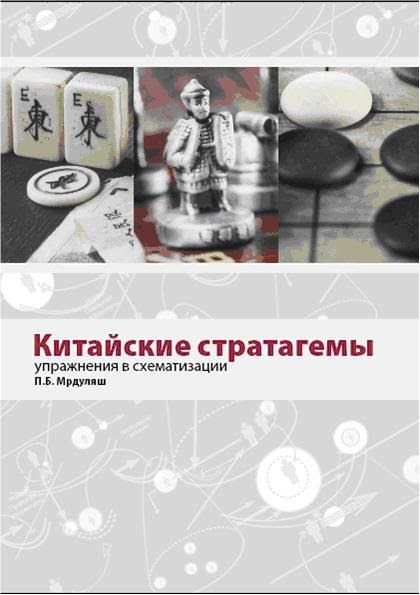
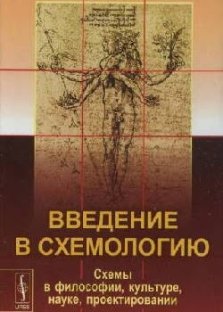
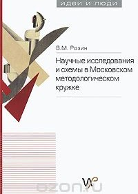
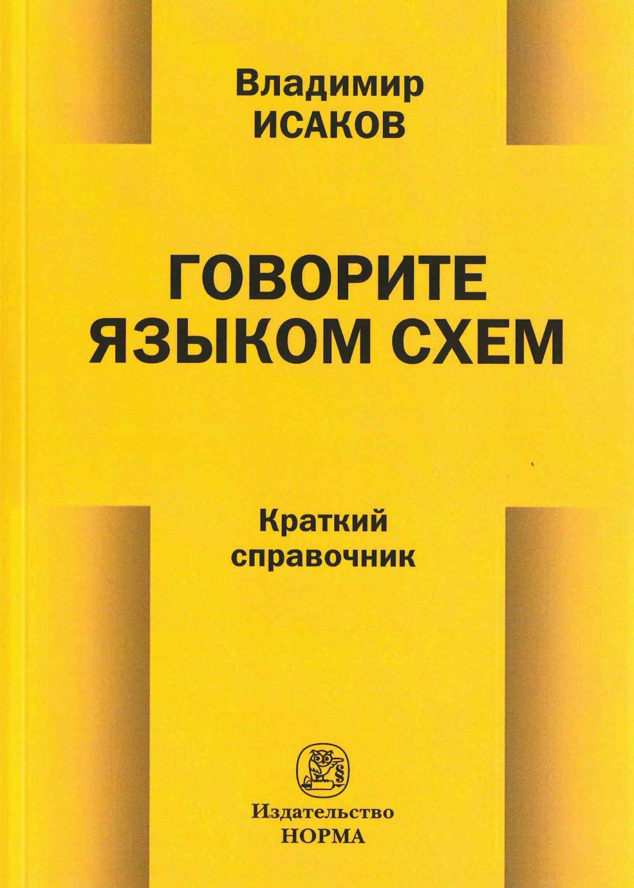
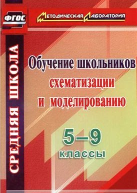

Библиотека
Схематизация
Библиотека
Александр Зинченко
«Базовые схемы и представления для методологической работы» («Музей схем», «Альбом схем»)
— набор схем, который вел А.П.Зинченко по поручению Г.П.Щедровицкого в 1980-х гг.
Александр Зинченко Схематизация как средство и форма организации интеллектуальных работ, Тольятти, 1995 г.
Александр Зинченко.
Игровая педагогика. Часть 3. Система знаний о схематизации
Тольятти, 2000
Технология системного мышления
Альпина Паблишер, 2017
Громыко Ю.В.
Метапредмет «Знак» Схематизация и построение знаков. Понимание символов
., Москва. 2001, Пушкинский дом, АО «Московский учебник»
Громыко Н. В.
Обучение схематизации: Сборник сценариев для проведения уроков и тренингов
. /Учебно-методическое пособие для учащихся 10-11 классов. — М., 2005
Морозов Ф.М.
Схемы как средство описания деятельности
(эпистемол. анализ). – М., 2005. — 181 с.
Мрдуляш П.Б. "
Китайские стратагемы
(упражнения в схематизации)". Практическое пособие по курсу «Схематизация» - М.: АНО Институт образовательных исследований и разработок, 2007.
Горностаев А.О.
Методологический аспект образования: тетрадь-пособие: в 4 частях
. Красноярск, 2007. 40 с.
Анисимов О.С.
Схемы и схематизация: путь в культуру мышления. – М., 2007, в 2-х т
Анисимов О.С. Схемы и язык схематических изображений. – М., 2008;
Развитие образования: методология, теория и практика управления. Антология схем
. – Красноярск, 2008. - 43 с. Составитель Горностаев А.О.
Мышление стратега: Стратегическое управление в схемах. Выпуск 7
/ Сост. - В.Н. Верхоглазенко. - М., 2009
Розин М.В.
Научные исследования и схемы в Московском методологическом кружке
. – М.: Некоммерч. научный фонд «Институт развития им. Г.П. Щедровицкого», 2011. – 495 с
Розин В.М.
Введение в схемологию: Схемы в философии, культуре, науке, проектировании
М.: Либроком, 2011. — 256 с.
Иволгина Л.И.
Схематизация в обучении: методическое пособие
Красноярск: 2011. ISBN 978-5-9979-0050-2
Анисимов О.С,
«100 схем» (базисная парадигма языка методолога)
. В.Новгород. 2013
Обучение школьников схематизации и моделированию
. 5-9 классы Волгоград: Учитель, 2014. — 103 с.
Антонова Л.А. “История в образах”, методичеcкое пособие, Чистополь, 2009
Исаков В.Б.
“Говорите языком схем. Краткий справочник”
, Норма, Инфра-М, 2016
Т.М.Ковалева и др. Личностно-ресурсное картирование, как средство работы тьютора. И не только, Ресурс, 2018 — 104 с.
Исаков В. Б.
Правовая аналитика в определениях, картах, схемах: Альбом
/ В. Б. Исаков. [Национальный исследовательский университет «Высшая школа экономики»]. – Москва, 2019. – 380 с. (Электронное издание)
Обновление страницы:




